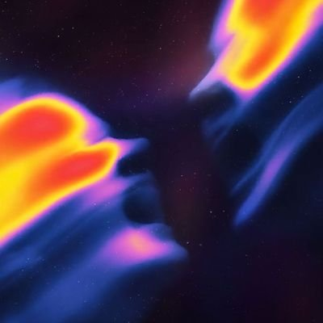

IIT Jodhpur | Email
a final year student at IIT Jodhpur, specializing in building novel Deep Learning sytems & products solving complex tasks.
i hate high level api wrappers :)
my passion lies in solving open problems, from AI to competitive programming.
i thrive in pressure :P
VL2G Lab | April 2026 - Present
Nova VistaAI | July 2025 - August 2025
MMVL Lab, IIT Jodhpur | Sept. 2024 - Present
AI / Full-Stack
context-driven code refactoring tool utilizing the Gemini API for intelligent semantic transformations. includes a responsive React-based frontend and FastAPI backend.
Deep Learning / Medical Vision
attention-based multiple instance learning (MIL) framework developed for cancer grading, incorporating feature fusion and generative models. trained on >5000 images at MMVL Lab.
Research Module / Transformers
a novel, from scratch implementation of a Transformer-based Set Prediction Network (TSPN) in PyTorch, developed as a core module for advanced research applications.
Programming Languages: C/C++, Rust, Python
ML/AI Frameworks: PyTorch, TensorFlow, Scikit-learn, LangChain, LangGraph, OpenCV, Keras, Pandas, NumPy
Backend & Systems: FastAPI, PostgreSQL, REST API, Docker, Git